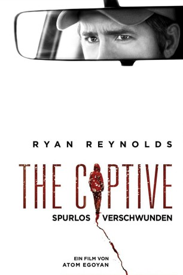

#5594 The Captive: Spurlos verschwunden
 
 IMDB-Wertung: 5.9 / 10
IMDB-Wertung: 5.9 / 10  Metascore: 0
Metascore: 0 
Es sollte nur ein kleiner Zwischenstopp sein, doch niemand konnte ahnen, dass er das Leben von Matthew und seiner Familie grundlegend ändern würde. Nachdem er sie für einen kurzen Moment im Auto allein gelassen hat, muss er feststellen, dass seine Tochter Cassandra spurlos verschwunden ist. Sofort schaltet Matthew die örtlichen Behörden ein, doch die sehen in ihm zunächst einmal den Hauptverdächtigen der Tat. Auch nach acht weiteren Jahren wird Matthew immer noch zu dem Vorfall befragt. Neue Spuren sind nur sehr spärlich hinzugekommen und die Ehe mit seiner Frau Tina hat stark darunter gelitten. Doch was sie nicht wissen: Cassandra ist noch am Leben. Und sie versucht verzweifelt, zu ihrer Familie zurückzukommen…
Jahr: 2014
Dauer: 111 Minuten
FSK: 16
Land: Kanada Studio: Ascot Elite Home EntertainmentTonspuren: DTS - ,
Untertitel: Deutsch,
Auflösung: 1080p (1920x808) Größe: 8212 MB
Genre: Thriller, Drama, Krimi, Mystery
Regisseur: Atom Egoyan
Drehbuch: Baltasar Kormákur
Soundtrack:
Darsteller:
 Kevin Durand als Mika
Kevin Durand als Mika Alexia Fast als Cass
Alexia Fast als Cass Mireille Enos als Tina
Mireille Enos als Tina Rosario Dawson als Nicole
Rosario Dawson als Nicole- Aidan Shipley als Albert
 Ryan Reynolds als Matthew
Ryan Reynolds als Matthew- Paige Baril als Paige
 Bruce Greenwood als Vince
Bruce Greenwood als Vince Scott Speedman als Jeffrey
Scott Speedman als Jeffrey William MacDonald als Frank
William MacDonald als Frank Jason Blicker als Sam
Jason Blicker als Sam Aaron Poole als Mike
Aaron Poole als Mike- Brendan Gall als Teddy
- Peyton Kennedy als Young Cass
- Ian Matthews als Willy
- Ella Ballentine als Jennifer
 Arsinée Khanjian als Diane
Arsinée Khanjian als Diane- Christine Horne als Vicky
- Wayne V. Johnson als Larry
- Samantha Michelle als Server in Pie Shop
 Duane Murray als Hotel Security Man
Duane Murray als Hotel Security Man- Jim Calarco als Manager
- Matthew Sauvé als Party Guest
- Michael Vincent Dagostino als Prison doctor , uncredited
- Douglas E. Davidson als Couple in Diner , uncredited
- Yvonne E. Davidson als Couple in Diner , uncredited
- Sara Sue Vallee als Party Guest , uncredited
- Mark Gorodnitsky als Young Albert
- Kelsey Ruhl als Linda
- Serge Keshishian als Waiter , uncredited
- Alyssa Piazza als Prisoners Girlfriend , uncredited
- Jeff Smith als Detective , uncredited
Datei: X:\2014(A-F)\Captive Spurlos verschwunden, The (2014, FSK16, 1920x808).mkv seit 20.02.2017
Festplatte: HD 2013(I-Z)-2014(A-Z)
 Es gibt insgesamt 119 Filme in der Gruppe '2014(A-F)'
Es gibt insgesamt 119 Filme in der Gruppe '2014(A-F)'